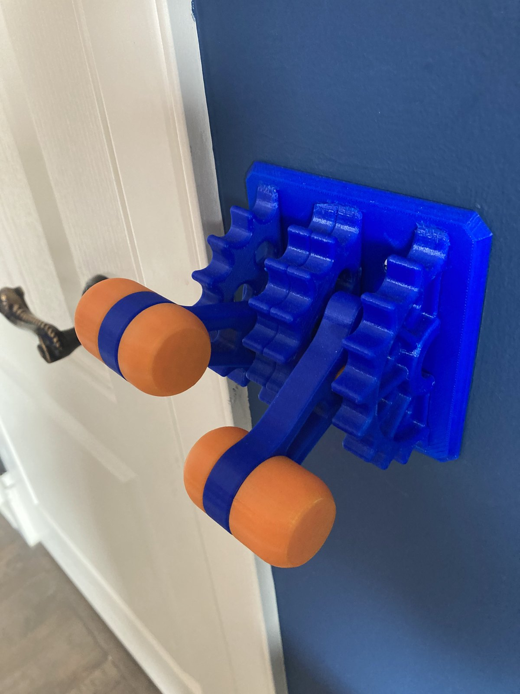
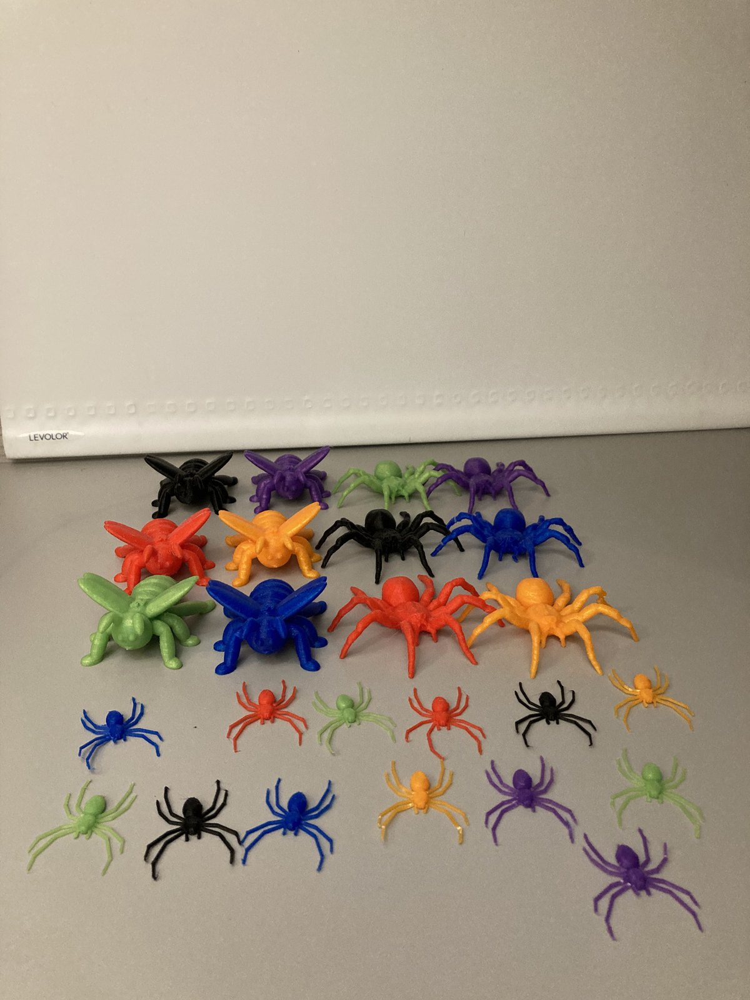

Turning Ideas into Products: My 3D Printing Business
I’ve always enjoyed making things. Once I learned 3D printing, I found out other people wanted the things I could make, so I started a business, marketing my products on Facebook Marketplace and Kijiji and making what customers asked for.
- Ran
- 2021–2025
- Sold through
- Facebook Marketplace and Kijiji
- Products
- Party favours · figures · décor · functional parts
- Top sellers
- Cup holder adapters and miscellaneous custom designs
From making things to selling them
I started experimenting with a 3D pen when I was about 10, and began 3D printing at about 11. At first I printed things for myself and made parts for my own projects.
In 2021 I started advertising my work, mostly on Facebook Marketplace and Kijiji. Customers told me what they needed and I made it. Some orders were my own custom designs, made for one particular request. For others, a publicly available design already did the job, so I printed that for the customer. Deciding which approach fit each request was part of the work.
How the business developed
3D pen
My first experiments with making things in plastic.
3D printing
Learning the printer and the software, and printing parts for my own projects.
First sales
Advertising on Facebook Marketplace and Kijiji and taking customer requests.
A growing range
Party favours, action figures, décor, cup holder adapters and miscellaneous custom designs.
Custom cup holder adapters
The problem. Larger water bottles, such as a Hydro Flask or a YETI, don’t fit many standard vehicle cup holders.
The product. A 3D-printed adapter with a base that fits into the existing cup holder and a larger opening on top for the bottle. Because bottles and cup holders vary, I made them custom-sized. They were one of my top sellers.


What else I made for customers
Miscellaneous custom designs
One-off designs for whatever a customer asked for. Together with the cup holder adapters, these were my top sellers.
Party favours
Customers hired me to design and print party favours for children’s birthdays.
Action figures
I printed action figures for collectors.
Décor
Decorative pieces, including Halloween and Christmas decorations.
Light switch gears
A geared mechanism that fits over a light switch and flips it with a lever.
Spiders
A bulk order of small spiders, printed as a batch in many colours.


Requests, decisions and what I learned
Every order started with understanding what the customer actually needed. A party favour order meant many matching pieces for one event. A cup holder adapter meant one part that fit one bottle and one vehicle. That’s different from building for myself, where I’m the only one who has to be happy with the result.
I ran the whole business myself. I did the marketing, taking the photos and writing the ads and descriptions, mostly on Facebook Marketplace and Kijiji. I handled every part of the sale: messaging customers, negotiating, setting prices, invoicing, collecting payment, and arranging pickup or delivery.
The business taught me to turn an idea into something someone else wanted and could use. Working with customers taught me to understand what someone needs and to take responsibility for delivering it.
What I handled
- MarketingPhotos, ads and descriptions, mainly on Facebook Marketplace and Kijiji.
- Customer messagingAnswering questions and working out what each customer needed.
- NegotiationAgreeing on what I’d make and at what price.
- Design and customizationCustom designs, or an existing design that fit the request.
- PrintingProducing each order, including bulk orders.
- Pricing and invoicingSetting prices and invoicing customers.
- PaymentCollecting payment for each order.
- Pickup and deliveryGetting the finished product to the customer.
From a small business to engineering
I’m interested in engineering, particularly mechanical design and robotics. The business showed me a side of design I wouldn’t have seen from my own projects alone: a product is only finished when it works for the person using it.
Each order followed the same pattern as my bigger builds, like the claw machine and the robotic arm: understand the need, design for it, make it and improve it. I want to keep doing that as an engineer, on products that people rely on.